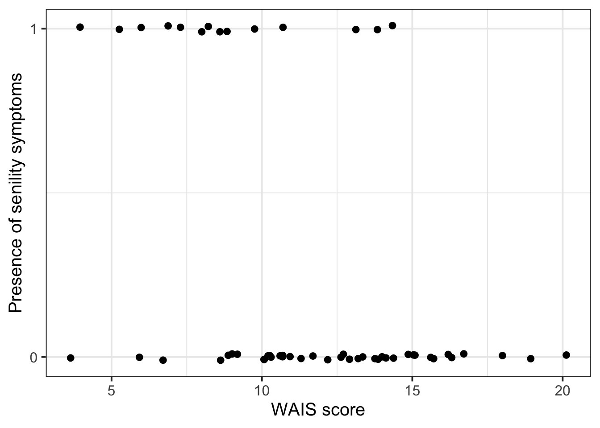
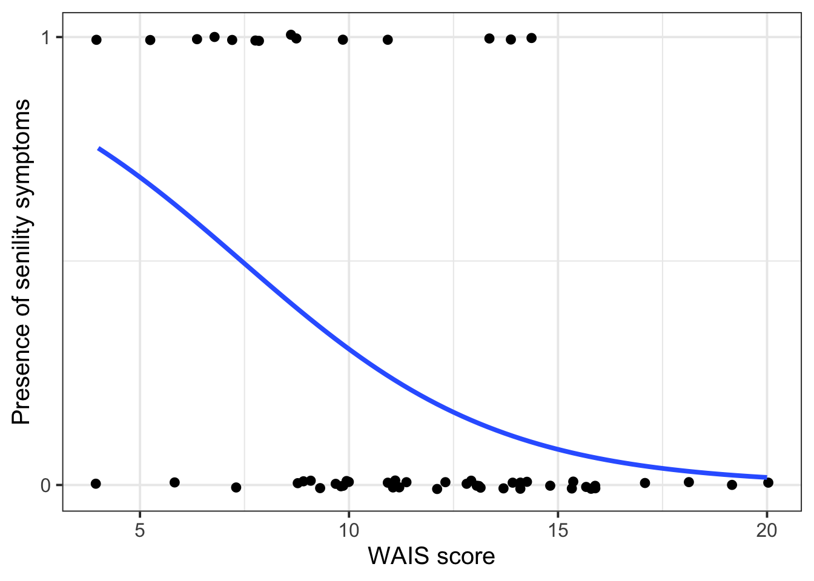
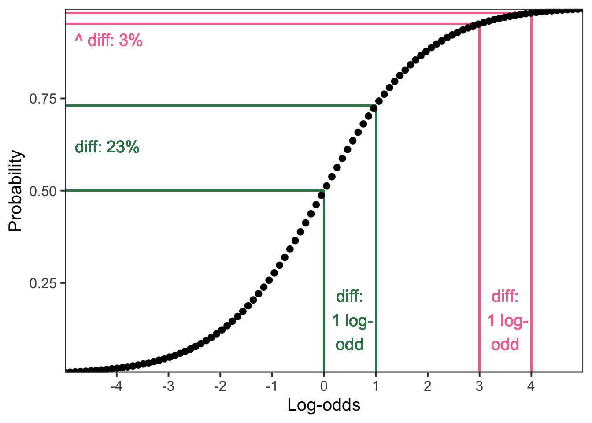
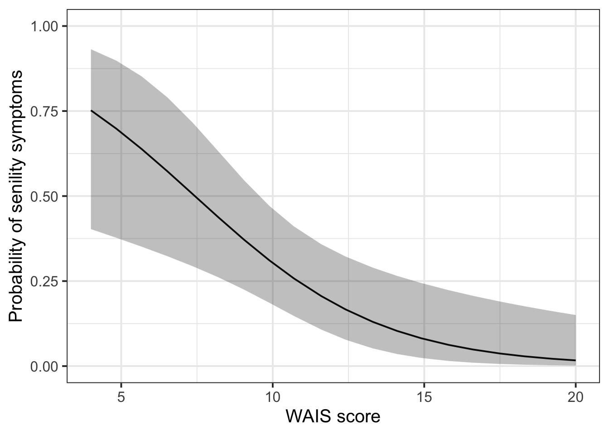

sendata <- read_csv("https://uoepsy.github.io/data/SenilityWAIS.csv")
head(sendata)# A tibble: 6 x 2
wais senility
<dbl> <dbl>
1 9 1
2 13 1
3 6 1
4 8 1
5 10 1
6 4 1Research Question
Does the probability of elderly adults having symptoms of senility change as a function of their score on the Wechsler Adult Intelligence Scale?
A small sample (\(n\) = 54) of elderly people were given a psychiatric examination to determine if symptoms of senility were present (senility: 0 = not present; 1 = present). Other measurements taken at the same time included the score on a subset of the Wechsler Adult Intelligence Scale (wais).
sendata <- read_csv("https://uoepsy.github.io/data/SenilityWAIS.csv")
head(sendata)# A tibble: 6 x 2
wais senility
<dbl> <dbl>
1 9 1
2 13 1
3 6 1
4 8 1
5 10 1
6 4 1Just the observed data:
sendata |>
ggplot(aes(x = wais, y = senility)) +
# wiggle the points around a little bit so they don't all overlap
geom_jitter(height = 0.01) +
# label only 0 and 1 on the y axis
scale_y_continuous(breaks = c(0, 1)) +
# rename the axes for clarity
labs(
y = 'Presence of senility symptoms',
x = 'WAIS score'
)
And we can also add a line of best fit using + geom_smooth(). But this shouldn’t be a straight line, as we know. To add a logistic curve, we specify method = 'glm' and specify the binomial family using method.args = list(family = binomial). And to get rid of the ribbon showing the standard error, we include se = FALSE.
sendata |>
ggplot(aes(x = wais, y = senility)) +
# wiggle the points around a little bit so they don't all overlap
geom_jitter(height = 0.01) +
# label only 0 and 1 on the y axis
scale_y_continuous(breaks = c(0, 1)) +
# rename the axes for clarity
labs(
y = 'Presence of senility symptoms',
x = 'WAIS score'
) +
# add logistic curve
geom_smooth(
method = "glm", # not a straight line
method.args = list(family = binomial), # specify logistic curve
se = FALSE # remove standard error ribbon around line
)
Looks like the probability of senility symptoms decreases as WAIS score increases.
To see if this decrease is statistically significant, let’s model it.
We’re modelling the log-odds of senility symptoms as a function of WAIS.
\[ \text{logodds(senile)} = \beta_0 + (\beta_1 \cdot \text{WAIS}) \]
Write:
$$
\text{logodds(senile)} = \beta_0 + (\beta_1 \cdot \text{WAIS})
$$Optionally, to be even fancier and more precise, you can unpack what “logodds” stands for:
\[ \log \left( \frac{p(\text{senile})}{1 - p(\text{senile})}\right) = \beta_0 + (\beta_1 \cdot \text{WAIS}) \]
Write:
$$
\log \left( \frac{p(\text{senile})}{1 - p(\text{senile})}\right) = \beta_0 + (\beta_1 \cdot \text{WAIS})
$$Same as always!
\[ \begin{align} H_0 &: \beta_1 = 0 \\ H_1 &: \beta_1 \neq 0\\ \end{align} \]
sen_mdl1 <- glm(
senility ~ wais,
family = "binomial", # this tells glm() to use logistic regression
data = sendata
)summary(sen_mdl1) # check out model summary
Call:
glm(formula = senility ~ wais, family = "binomial", data = sendata)
Coefficients:
Estimate Std. Error z value Pr(>|z|)
(Intercept) 2.404 1.192 2.02 0.0437 *
wais -0.324 0.114 -2.84 0.0045 **
---
Signif. codes: 0 '***' 0.001 '**' 0.01 '*' 0.05 '.' 0.1 ' ' 1
(Dispersion parameter for binomial family taken to be 1)
Null deviance: 61.806 on 53 degrees of freedom
Residual deviance: 51.017 on 52 degrees of freedom
AIC: 55.02
Number of Fisher Scoring iterations: 5confint(sen_mdl1) # get confidence intervals for the coefficient 2.5 % 97.5 %
(Intercept) 0.208 4.978
wais -0.576 -0.121(Intercept) = \(\beta_0\)For people with a WAIS score of 0, the estimated log-odds of having symptoms of senility is 2.4.
This estimate is significantly different from 0 (95% CI: [0.21, 4.98], p = 0.04).
For intercepts only (not for slopes), we can back-transform the coefficient estimate to probability space:
plogis(2.4)[1] 0.917So in other words, for people with a WAIS score of 0, the estimated probability of having symptoms of senility is 91.7%.
When the outcome scale is log-odds, it’s actually interesting if the intercept is significantly different from zero!
A log-odds of zero equals a probability of 0.5, which is the same as 50/50 chance, like flipping a coin.
So if our intercept is significantly different from zero, then we know that the log-odds of a successful outcome (whatever that is for the given model) is significantly different from chance.
For the senility model, the significant intercept tells us that people with a WAIS score of 0 have a probability of showing senility symptoms that’s significantly higher than chance.
wais = \(\beta_1\)Increasing WAIS score by one point is associated with the log-odds of senility symptoms decreasing by 0.32.
This decrease is significantly different from zero (95% CI [–0.58, –0.12], p = 0.005).
We cannot back-transform the slopes to probabilities the way we can with the intercept.
We can only back-transform the intercept into probabilities because the intercept represents the log-odds of something happening. In contrast, the slope represents a change in log-odds, or differences between two log-odds values. And because the logit link function is not linear, the differences between two log-odds values mean different things, depending on what the values are that we’re comparing.
For example, imagine a slope coefficient of 1, that is, a difference in log-odds of one unit.
If that difference is between a log-odds of 0 and a log-odds of 1, then it maps to a difference in probabilities of 23%:
plogis(1) - plogis(0)[1] 0.231But if that difference is between a log-odds of 3 and a log-odds of 4, then it maps to a difference in probabilities of just 3%:
plogis(4) - plogis(3)[1] 0.0294To give a visual intuition:
tibble(
logodds = seq(-5, 5, length.out = 100),
prob = plogis(logodds)
) |>
ggplot(aes(x = logodds, y = prob)) +
scale_y_continuous(expand = c(0, 0)) +
scale_x_continuous(expand = c(0, 0), breaks = -4:4) +
labs(x = 'Log-odds', y = 'Probability') +
theme(panel.grid = element_blank()) +
# horiz green
geom_segment(x = 0, y = plogis(0), xend = -5, yend = plogis(0), colour = '#2B8654') +
geom_segment(x = 1, y = plogis(1), xend = -5, yend = plogis(1), colour = '#2B8654') +
geom_text(
x = -4.8,
y = 0.62,
colour = '#2B8654',
label = paste0('diff: ', 100*round(plogis(1)-plogis(0), 2), '%'),
hjust = 0,
size = 5
) +
# vert green
geom_segment(x = 0, y = 0, xend = 0, yend = plogis(0), colour = '#2B8654') +
geom_segment(x = 1, y = 0, xend = 1, yend = plogis(1), colour = '#2B8654') +
geom_text(
x = 0.5,
y = 0.15,
colour = '#2B8654',
label = paste0('diff:\n 1 log-\nodd'),
size = 5
) +
# horiz pink
geom_segment(x = 3, y = plogis(3), xend = -5, yend = plogis(3), colour = '#FF6D9A') +
geom_segment(x = 4, y = plogis(4), xend = -5, yend = plogis(4), colour = '#FF6D9A') +
geom_text(
x = -4.8,
y = 0.91,
colour = '#FF6D9A',
label = paste0('^ diff: ', 100*round(plogis(4)-plogis(3), 2), '%'),
hjust = 0,
size = 5
) +
# vert pink
geom_segment(x = 3, y = 0, xend = 3, yend = plogis(3), colour = '#FF6D9A') +
geom_segment(x = 4, y = 0, xend = 4, yend = plogis(4), colour = '#FF6D9A') +
geom_text(
x = 3.5,
y = 0.15,
colour = '#FF6D9A',
label = paste0('diff:\n 1 log-\nodd'),
size = 5
) +
geom_point() +
NULL
Because the slope coefficient is 1, presented in isolation from the actual values that it’s the difference between, we can’t back-transform it without knowing what those other values are, because the difference in probability space could be 3% or 23% or anywhere in between.
To display the predicted probability of senility symptoms across all WAIS values, we can use the Effect() function from the effects package.
library(effects)
Effect(focal.predictors = "wais", mod = sen_mdl1, xlevels = 20) |>
as.data.frame() |>
ggplot(aes(x = wais, y = fit, ymin = lower, ymax = upper))+
geom_line()+
geom_ribbon(alpha = .3) +
labs(
y = 'Probability of senility symptoms',
x = 'WAIS score'
) +
ylim(0, 1)
Here’s what’s going on in the code above:
Within Effect():
focal.predictors: the predictor we want on the x axis.mod: the name of the fitted modelxlevels: return X number of evenly spaced fitted values across the predictor (in the below example, we are asking for 20)Within ggplot():
x: predictor on x-axisy: predicted outcome on y-axisymin: lower CI boundymax: upper CI boundgeom_line(): predicted effect line (i.e., how the DV varies as a function of the continuous IV)geom_pointrange(): predicted probability for each group (i.e., how the DV differs across categorical IV)geom_ribbon(): shaded band representing the confidence intervalWhat is the probability that somebody with a WAIS score of 15 shows senility symptoms?
To start, take the model’s mathematical expression and substitute in the model’s coefficients:
\[ \begin{align} \text{logodds(senile)}_\text{WAIS=15} &= \beta_0 + (\beta_1 \cdot \text{WAIS}) \\ &= 2.40 + (-0.32 \cdot \text{WAIS}) \\ \end{align} \]
Next, we’ll substitute the value we’re interested in making predictions about for WAIS, and then we’ll simplify the expression until we get a single number
\[ \begin{align} \text{logodds(senile)}_\text{WAIS=15} &= 2.40 + (-0.32 \cdot \text{WAIS}) \\ &= 2.40 + (-0.32 \cdot 15) \\ &= 2.40 + (-4.80) \\ &= -2.40 \\ \end{align} \]
So the predicted log-odds of showing senility symptoms with a WAIS score of 15 is –2.40.
Finally, we get the corresponding probability using plogis().
plogis(-2.40)[1] 0.0832So, the predicted probability that somebody will show symptoms of senility if their WAIS score is 15 is 8.3%.